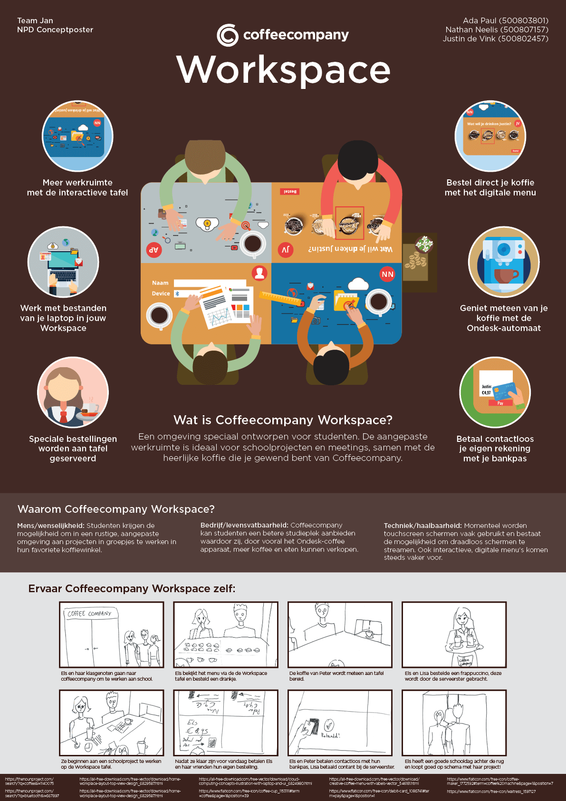
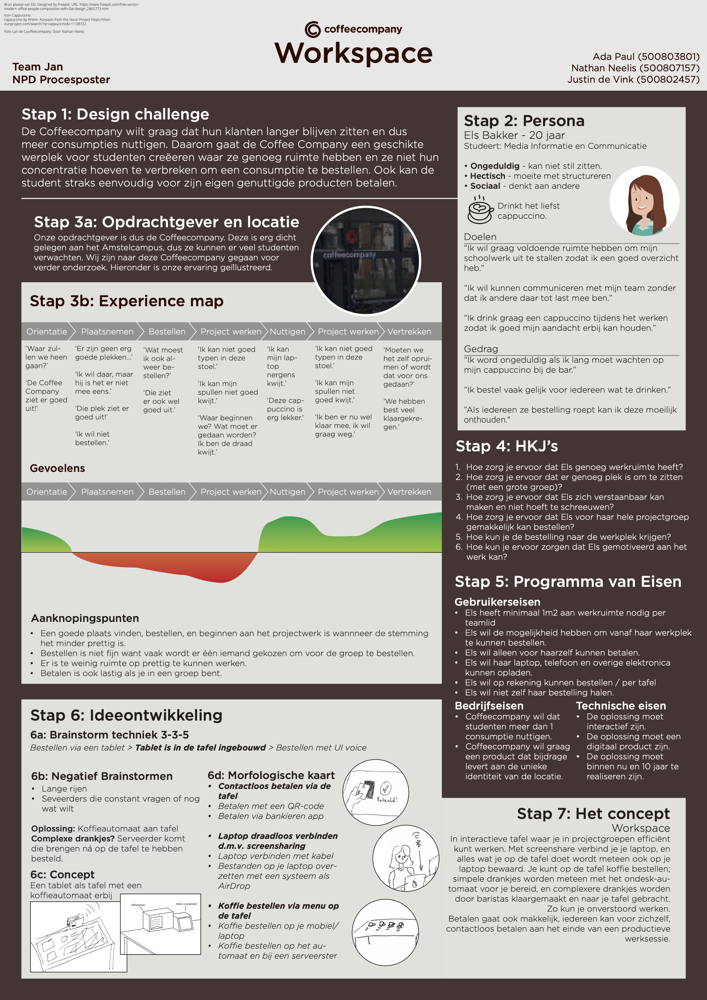

Begrijpen en Kaderen
Coffeecompany Workspace
Voor het vak New Product Development heb ik samen met 2 twee klasgenoten een concept bedacht voor het verbeteren van de ervaring van studenten in Coffeecompany die aan school werken. Ons groepje lag vooral de focus op een concept dat ingeschakeld kon worden zodra studenten in een groepje aan een schoolproject werken. Voor de eindopdracht heb ik o.a. een conceptposter vormgegeven die vooral visueel ons concept beschreef.
Situatie
Coffeecompany had gevraagd een concept te bedenken waarmee HvA studenten gemakkelijk in groepjes aan projecten konden werken. Stakeholders in dit project waren voornamelijk Hva studenten, Coffeecompany medewerkers en overige Coffeecompany bezoekers.
Taak
De opdracht voor dit vak was, door middel van onderzoek technieken, op een passend concept te bedenken waardoor HvA studenten vaker Coffeecompany gingen bezoeken om aan projecten te werken. Het concept moest een unieke ervaring bieden die alleen bij Coffeecompany ervaren kon worden, de ervaring moest aansluiten op wat projectgroepen wilden tijdens het werken aan schoolprojecten.
Activiteiten
Door middel van het observeren van de huidige situatie en het maken van o.a. een Stakeholder map, Experience map en Empathy map, hebben we een duidelijk idee gekregen over welke problemen er aanwezig waren en welke oplossing de grootste prioriteit had.
Resultaat
Het resultaat van ons onderzoek heeft er tot geleid dat we een duidelijk idee hadden van de huidige situatie en de problemen die daarbij hoorde. Hierdoor wisten we welk probleem ons concept moest oplossen en wisten we dat het concept passend was bij de doelgroep.
Reflectie
In de procesposter is het proces van hoe wij tot ons concept zijn gekomen samengevat, een gedeelte hiervan was ons onderzoek. De bevindingen van dit onderzoek was uiteindelijk weergeven als een persona en expience map. Ik denk dat we hiermee duidelijk de probleemstelling kort en bondig hebben kunnen overdragen.
 